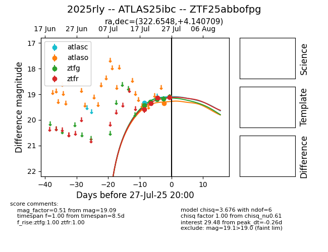

Target 2025rly at 2025-07-27 20:00, see:
FINK: fink-portal.org/2025rly
Lasair: lasair-ztf.lsst.ac.uk/objects/2025rly
ALeRCE: alerce.online/object/2025rly
TNS: wis-tns.org/object/2025rly
YSE: ziggy.ucolick.org/yse/transient_detail/2025rly
alt names
ZTF25abbofpg (ztf,fink)
2025rly (tns,yse)
ATLAS25ibc (atlas)
coordinates:
equatorial (ra, dec) = (322.6548,+4.14071)
galactic (l, b) = (57.8093,-32.35898)
photometry
last atlasc=19.34, atlaso=19.35, ztfg=19.09, ztfr=19.11
1 atlasc, 1 atlaso, 5 ztfg, 4 ztfr detections
